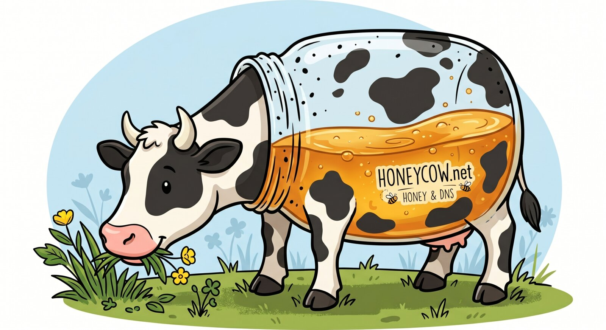

A polite NS squatter. You probably got here because something resolved through one of our nameservers and you wanted to know what was going on.
The DNS server you queried claimed to be authoritative for a name
it has no real business answering for. For most names it returned
a synthesized response pointing every A /
AAAA at this same server, plus an NS
rrset, an SOA, and a TXT calling card.
That was on purpose. It's a research / observation tool — a sibling of chaoscow, which is the polite, single-zone version. This one (honeycow) is gleefully authoritative for every zone except a few categories of name we explicitly refuse (see below), and it logs whoever asked.
It isn't a phishing landing page, a credential trap, or anything trying to deliver content to you. The HTTP closer page is the only thing you'd ever get from this server, and it's the same page no matter what name you came in on.
It also isn't an open resolver. The wire-level differences are
observable with dig:
AA=1 and clears RA=0.
Honeycow never forwards a query.TC=1.
Oversized answers truncate, forcing TCP retry. Removes the
spoofed-UDP amplification path.REFUSED
in every case.Three categories of name return REFUSED instead of a
synthesized answer:
.localhost,
example.com, the RFC 1918 reverse zones, etc., per
RFC 6761 / 2606 / 6303 / 4193 — names defined never to resolve
to a public authoritative answer.shadowserver.org, cybergreen.net,
internet-measurement.com, and similar published
scanner-research zones. We don't want to falsely validate
amplifier paths in their open-resolver reports.If a name that should be live is resolving through here, or you'd like an exemption added, or you're trying to track down where one of our responses came from, email abuse@honeycow.net with the query name, the timestamp, and a packet capture if you have one. A human reads it.
If you're a hosting-provider abuse desk that arrived here via a Shadowserver-style report, the wire-level behavior above is what distinguishes honeycow from a misconfigured open resolver, and the research-scanner exemption list is the mitigation we ship to drop off open-resolver reports on the next scan cycle. Reach out at the same address and we'll respond promptly.